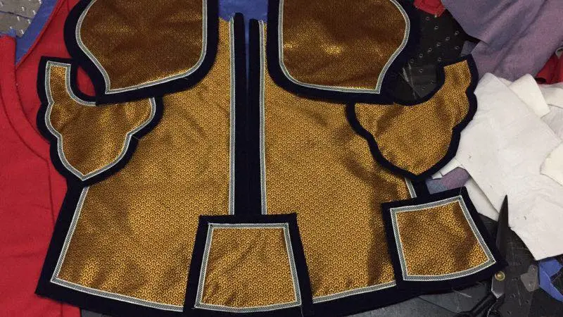

第六回 贾宝玉初试云雨情 刘姥姥一进荣国府1
正文
却说秦氏因听见宝玉从梦中唤他的乳名，心中自是纳闷，又不好细问。彼时宝玉迷迷惑惑，若有所失。众人忙端上桂圆汤2来，呷3了两口，遂起身整衣。袭人伸手与他系裤带时，不觉伸手至大腿处，只觉冰凉一片粘湿，唬4的忙退出手来，问是怎么了。宝玉红涨了脸，把他的手一捻5。袭人本是个聪明女子，年纪本又比宝玉大两岁，近来也渐通人事，今见宝玉如此光景，心中便觉察一半了，不觉也羞的红胀了脸面，不敢再问。仍旧理好衣裳，遂至贾母处来，胡乱吃毕了晚饭，过这边来。
袭人忙趁众奶娘丫鬟不在旁时，另取出一件中衣6来与宝玉换上。宝玉含羞央告道：”好姐姐，千万别告诉人。”袭人亦含羞笑问道：”你梦见什么故事了？是那里流出来的那些脏东西？”宝玉道：”一言难尽。”说着便把梦中之事细说与袭人听了。说至警幻所授云雨之情，羞的袭人掩面伏身而笑。宝玉亦素喜袭人柔媚娇俏，遂强袭人同领警幻所训云雨之事。袭人素知贾母已将自己与了宝玉的，今便如此，亦不为越礼7，遂和宝玉偷试一番，幸得无人撞见。自此宝玉视袭人更比别个不同，袭人待宝玉更为尽心。暂且别无话说。
按荣府中一宅人合算起来，人口虽不多，从上至下也有三四百丁8；虽事不多，一天也有一二十件，竟如乱麻一般，并无个头绪可作纲领。正寻思从那一件事自那一个人写起方妙，恰好忽从千里之外，芥荳9之微，小小一个人家，因与荣府略有些瓜葛，这日正往荣府中来，因此便就此一家说来，倒还是头绪。你道这一家姓甚名谁，又与荣府有甚瓜葛？且听细讲10。
方才所说的这小小之家，乃本地人氏，姓王，祖上曾作过小小的一个京官，昔年与凤姐之祖王夫人之父认识。因贪王家的势利，便连了宗11认作侄儿。那时只有王夫人之大兄凤姐之父与王夫人随在京中的，知有此一门连宗之族，馀者皆不认识。目今其祖已故，只有一个儿子，名唤王成，因家业萧条，仍搬出城外原乡中住去了。王成新近亦因病故，只有其子，小名狗儿。狗儿亦生一子，小名板儿，嫡妻刘氏，又生一女，名唤青儿。一家四口，仍以务农为业。因狗儿白日间又作些生计，刘氏又操井臼12等事，青板姊13弟14两个无人看管，狗儿遂将岳母刘姥姥接来一处过活。这刘姥姥乃是个积年的老寡妇，膝下又无儿女，只靠两亩薄田度日。今者15女婿接来养活，岂不愿意，遂一心一计，帮趁着女儿女婿过活起来。
因这年秋尽冬初，天气冷将上来，家中冬事16未办，狗儿未免心中烦虑，吃了几杯闷酒，在家闲寻气恼，刘氏也不敢顶撞。因此刘姥姥看不过，乃劝道：”姑爷17，你别嗔18着我多嘴。咱们村庄人，那一个不是老老诚诚的，守多大碗儿吃多大的饭。你皆因年小的时候，托着你那老家之福，吃喝惯了，如今所以把持不住。有了钱就顾头不顾尾，没了钱就瞎生气，成个什么男子汉大丈夫呢！如今咱们虽离城住着，终是天子脚下。这长安城19中，遍地都是钱，只可惜没人会去拿去罢了。在家跳蹋20会子21也不中用。”狗儿听说，便急道：”你老只会炕头儿上混说，难道叫我打劫偷去不成？”刘姥姥道：”谁叫你偷去呢。也到底想法儿大家裁度22，不然那银子钱自己跑到咱家来不成？”狗儿冷笑道：”有法儿还等到这会子呢。我又没有收税的亲戚，作官的朋友，有什么法子可想的？便有，也只怕他们未必来理我们呢！”
刘姥姥道：”这倒不然。谋事在人，成事在天。咱们谋到了，看菩萨的保佑，有些机会，也未可知。我倒替你们想出一个机会来。当日你们原是和金陵王家连过宗的，二十年前，他们看承你们还好；如今自然是你们拉硬屎23，不肯去亲近他，故疏远起来。想当初我和女儿还去过一遭。他们家的二小姐着实响快24，会待人，倒不拿大25。如今现是荣国府贾二老爷的夫人。听得说，如今上了年纪，越发怜贫恤老，最爱斋僧敬道，舍米舍钱的。如今王府虽升了边任26，只怕这二姑太太还认得咱们。你何不去走动走动，或者他念旧，有些好处，也未可知。要是他发一点好心，拔一根寒毛比咱们的腰还粗呢。”刘氏一旁接口道：”你老虽说的是，但只你我这样个嘴脸，怎么好到他门上去的。先不先，他们那些门上的人也未必肯去通信。没的去打嘴现世2728。”
刘姥姥消息灵通
谁知狗儿利名心最重，听如此一说，心下便有些活动起来。又听他妻子这话，便笑接道：”姥姥既如此说，况且当年你又见过这姑太太29一次，何不你老人家明日就走一趟，先试试风头再说。”刘姥姥道：”嗳哟哟！可是说的30‘侯门深似海’31，我是个什么东西，他家人又不认得我，我去了也是白去的。”狗儿笑道：”不妨，我教你老人家一个法子：你竟带了外孙子板儿，先去找陪房32周瑞，若见了他，就有些意思了。这周瑞先时曾和我父亲交过一件事，我们极好的。”刘姥姥道：”我也知道他的。只是许多时不走动，知道他如今是怎样。这也说不得了，你又是个男人，又这样个嘴脸，自然去不得；我们姑娘年轻媳妇子33，也难卖头卖脚34的，倒还是舍着我这付老脸去碰一碰。果然有些好处，大家都有益；便是没银子来，我也到那公府侯门见一见世面，也不枉我一生。”说毕，大家笑了一回。当晚计议已定。
刘姥姥心态好
次日天未明，刘姥姥便起来梳洗了，又将板儿教训了几句。那板儿才五六岁的孩子，一无所知，听见带他进城逛去，便喜的无不应承。于是刘姥姥带他进城，找至宁荣街。
来至荣府大门石狮子前，只见簇簇轿马，刘姥姥便不敢过去，且掸35了掸衣服，又教了板儿几句话，然后蹭36到角门前。只见几个挺胸叠肚指手画脚的人，坐在大板凳上，说东谈西呢。刘姥姥只得蹭上来问：”太爷们纳福37。”众人打量了他一会，便问”那里来的？”刘姥姥陪笑道：”我找太太的陪房周大爷的，烦那位太爷38替我请他老出来。”那些人听了，都不瞅睬39，半日方说道：”你远远的在那墙角下等着，一会子他们家有人就出来的。”内中有一老年人说道：”不要误他的事，何苦耍他。”因向刘姥姥道：”那周大爷已往南边去了。他在后一带住着，他娘子却在家。你要找时，从这边绕到后街上后门上去问就是了。”
刘姥姥听了谢过，遂携了板儿，绕到后门上。只见门前歇着些生意担子，也有卖吃的，也有卖顽耍物件的，闹吵吵三二十个小孩子在那里厮闹。刘姥姥便拉住一个道：”我问哥儿一声，有个周大娘可在家么？”孩子们道：”那个周大娘？我们这里周大娘有三个呢，还有两个周奶奶，不知是那一行当40的？”刘姥姥道：”是太太的陪房周瑞。”孩子道：”这个容易，你跟我来。”说着，跳蹿蹿的引着刘姥姥进了后门，至一院墙边，指与刘姥姥道：”这就是他家。”又叫道：”周大娘，有个老奶奶来找你呢，我带了来了。”
周瑞家的在内听说，忙迎了出来，问：”是那位？”刘姥姥忙迎上来问道：”好呀，周嫂子！”周瑞家的认了半日，方笑道：”刘姥姥，你好呀！你说说，能几年，我就忘了。请家里来坐罢。”刘姥姥一壁里走着，一壁笑说道：”你老是贵人多忘事，那里还记得我们呢。”说着，来至房中。周瑞家的命雇的小丫头倒上茶来吃着。周瑞家的又问板儿道：”你都长这们大了！”又问些别后闲话。又问刘姥姥：”今日还是路过，还是特来的？”刘姥姥便说：”原是特来瞧瞧嫂子你，二则也请请姑太太的安。若可以领我见一见更好，若不能，便借重嫂子转致意罢了。”
会说话
周瑞家的听了，便已猜着几分来意。只因昔年他丈夫周瑞争买田地一事，其中多得狗儿之力，今见刘姥姥如此而来，心中难却其意；二则也要显弄自己的体面。听如此说，便笑说道：”姥姥你放心。大远的诚心诚意来了，岂有个不教你见个真佛41去的呢。论理，人来客至回话，却不与我相干。我们这里都是各占一样儿：我们男的只管春秋两季地租子42，闲时只带着小爷们出门子43就完了；我只管跟太太奶奶们出门的事。皆因你原是太太的亲戚，又拿我当个人，投奔了我来，我就破个例，给你通个信去。但只一件，姥姥有所不知，我们这里又不比五年前了。如今太太竟不大管事，都是琏二奶奶管家了。你道这琏二奶奶是谁？就是太太的内侄女44，当日大舅老爷的女儿，小名凤哥的。”刘姥姥听了，罕问道：”原来是他！怪道呢，我当日就说他不错呢。这等说来，我今儿还得见他了。”周瑞家的道：”这自然的。如今太太事多心烦，有客来了，略可推得去的就推过去了，都是凤姑娘周旋迎待。今儿宁可不会太太，倒要见他一面，才不枉这里来一遭。”刘姥姥道：”阿弥陀佛！全仗嫂子方便了。”周瑞家的道：”说那里话。俗语说的：’与人方便，自己方便。’不过用我说一句话罢了，害着我什么。”说着，便叫小丫头到倒厅4546上悄悄的打听打听，老太太屋里摆了饭了没有。小丫头去了。这里二人又说些闲话。
刘姥姥因说：”这凤姑娘今年大还不过二十岁罢了，就这等有本事，当这样的家，可是难得的。”周瑞家的听了道：”我的姥姥，告诉不得你呢。这位凤姑娘年纪虽小，行事却比世人都大呢。如今出挑的美人一样的模样儿，少说些有一万个心眼子。再要赌口齿，十个会说话的男人也说他不过。回来你见了就信了。就只一件，待下人未免太严些个。”说着，只见小丫头回来说：”老太太屋里已摆完了饭了，二奶奶在太太屋里呢。”周瑞家的听了，连忙起身，催着刘姥姥说：”快走，快走。这一下来他吃饭是个空子47，咱们先赶着去。若迟一步，回事的人也多了，难说话。再歇了中觉，越发没了时候了。”说着一齐下了炕，打扫打扫衣服，又教了板儿几句话，随着周瑞家的，逶迤48往贾琏的住处来。
先到了倒厅，周瑞家的将刘姥姥安插在那里略等一等。自己先过了影壁，进了院门，知凤姐未下来，先找着凤姐的一个心腹通房大丫头4950名唤平儿的。周瑞家的先将刘姥姥起初来历说明，又说：”今日大远的特来请安。当日太太是常会的，今日不可不见，所以我带了他进来了。等奶奶下来，我细细回明，奶奶想也不责备我莽撞的。”平儿听了，便作了主意：”叫他们进来，先在这里坐着就是了。”周瑞家的听了，方出去引他两个进入院来。
上了正房台矶51，小丫头打起猩红毡帘52，才入堂屋53，只闻一阵香扑了脸来，竟不辨是何气味，身子如在云端里一般。满屋中之物都耀眼争光的，使人头悬目眩。刘姥姥此时惟点头咂54嘴念佛而已。于是来至东边这间屋内，乃是贾琏的女儿大姐儿睡觉之所。平儿站在炕沿边，打量了刘姥姥两眼，只得问个好让坐。刘姥姥见平儿遍身绫罗55，插金带银，花容玉貌的，便当是凤姐儿了。才要称姑奶奶，忽见周瑞家的称他是平姑娘，又见平儿赶着周瑞家的称周大娘，方知不过是个有些体面的丫头了。于是让刘姥姥和板儿上了炕，平儿和周瑞家的对面坐在炕沿上，小丫头子斟了茶来吃茶。
刘姥姥只听见咯当咯当的响声，大有似乎打箩柜56筛面57的一般，不免东瞧西望的。忽见堂屋中柱子上挂着一个匣子，底下又坠着一个秤砣58般一物，却不住的乱幌59。刘姥姥心中想着：”这是什么爱物儿60？有甚用呢？”正呆时，只听得当的一声，又若金钟铜磬61一般，不防倒唬的一展眼62。接着又是一连八九下。方欲问时，只见小丫头子们齐乱跑，说：”奶奶下来了。”周瑞家的与平儿忙起身，命刘姥姥”只管等着，是时候我们来请你”。说着，都迎出去了。
刘姥姥屏声侧耳默候。只听远远有人笑声，约有一二十妇人，衣裙窸窣63，渐入堂屋，往那边屋内去了。又见两三个妇人64，都捧着大漆捧盒65，进这边来等候。听得那边说了声”摆饭”，渐渐的人才散出，只有伺候端菜的几个人。半日鸦雀不闻之后，忽见二人抬了一张炕桌来，放在这边炕上，桌上碗盘森列，仍是满满的鱼肉在内，不过略动了几样。板儿一见了，便吵着要肉吃，刘姥姥一巴掌打了他去。忽见周瑞家的笑嘻嘻走过来，招手儿叫他。刘姥姥会意，于是带了板儿下炕，至堂屋中，周瑞家的又和他唧咕66了一会，方过这边屋里来。
懂规矩
只见门外錾铜钩67上悬着大红撒花软帘，南窗68下是炕，炕上大红毡条69，靠东边板壁70立着一个锁子锦7172靠背与一个引枕73，铺着金心绿闪缎74大坐褥75，旁边有雕漆76痰盒77。那凤姐儿家常78带着秋板貂鼠昭君套7980，围着攒珠勒子8182，穿着桃红撒花袄，石青刻丝灰鼠披风8384，大红洋绉银鼠皮裙85，粉光脂艳，端端正正坐在那里，手内拿着小铜火箸86儿拨手炉87内的灰。平儿站在炕沿边，捧着小小的一个填漆8889茶盘，盘内一个小盖钟90。凤姐也不接茶，也不抬头，只管拨手炉内的灰，慢慢的问道：”怎么还不请进来？”一面说，一面抬身要茶时，只见周瑞家的已带了两个人在地下站着呢。这才忙欲起身犹未起身时，满面春风的问好，又嗔着周瑞家的怎么不早说。刘姥姥在地下已是拜了数拜，问姑奶奶安。凤姐忙说：”周姐姐，快搀起来，别拜罢，请坐。我年轻，不大认得，可也不知是什么辈数，不敢称呼。”周瑞家的忙回道：”这就是我才回的那姥姥了。”凤姐点头。刘姥姥已在炕沿上坐了。板儿便躲在背后，百般的哄他出来作揖，他死也不肯。
懂规矩



凤姐儿笑道：”亲戚们不大走动，都疏远了。知道的呢，说你们弃厌我们，不肯常来；不知道的那起小人，还只当我们眼里没人似的。”刘姥姥忙念佛道：”我们家道艰难，走不起，来了这里，没的91给姑奶奶打嘴92，就是管家爷93们看着也不像94。”凤姐儿笑道：”这话没的95叫人恶心。不过借赖着祖父虚名，作了穷官儿，谁家有什么，不过是个旧日的空架子。俗语说，’朝廷还有三门子穷亲戚’呢，何况你我。”说着，又问周瑞家的回了太太96了没有。周瑞家的道：”如今等奶奶97的示下。”凤姐道：”你去瞧瞧，要是有人有事就罢，得闲儿98呢就回，看怎么说。”周瑞家的答应着去了。
这里凤姐叫人抓些果子与板儿吃，刚问些闲话时，就有家下许多媳妇管事的来回话。平儿回了，凤姐道：”我这里陪客呢，晚上再来回。若有很要紧的，你就带进来现办。”平儿出去了，一会进来说：”我都问了，没什么紧事，我就叫他们散了。”凤姐点头。只见周瑞家的回来，向凤姐道：”太太说了，今日不得闲，二奶奶99陪着便是一样。多谢费心想着。白来逛逛呢便罢；若有甚说的，只管告诉二奶奶，都是一样。”刘姥姥道：”也没甚说的，不过是来瞧瞧姑太太100、姑奶奶101，也是亲戚们的情分。”周瑞家的道：”没甚说的便罢；若有话，只管回二奶奶，是和太太一样的。”一面说，一面递眼色与刘姥姥。
刘姥姥会意，未语先飞红的脸，欲待不说，今日又所为何来？只得忍耻说道：”论理今儿初次见姑奶奶，却不该说，只是大远的奔了你老这里来，也少不的说了。”刚说到这里，只听二门上小厮们回说：”东府里的小大爷进来了。”凤姐忙止刘姥姥：”不必说了。”一面便问：”你蓉大爷102在那里呢？”只听一路靴子脚响，进来了一个十七八岁的少年，面目清秀，身材俊俏，轻裘103宝带，美服华冠。刘姥姥此时坐不是，立不是，藏没处藏。凤姐笑道：”你只管坐着，这是我侄儿。”刘姥姥方扭扭捏捏在炕沿上坐了。
敢于不要脸
贾蓉笑道：”我父亲打发我来求婶子104，说上回老舅太太105给婶子的那架玻璃炕屏106，明日请一个要紧的客，借了略摆一摆就送过来。”凤姐道：”说迟了一日，昨儿已经给了人了。”贾蓉听着，嘻嘻的笑着，在炕沿上半跪道：”婶子若不借，又说我不会说话了，又挨一顿好打呢。婶子只当可怜侄儿罢。”凤姐笑道：”也没见你们，王家的东西都是好的不成？你们那里放着那些好东西，只是看不见，偏我的就是好的。”贾蓉笑道：”那里有这个好呢！只求开恩罢。”凤姐道：”若碰一点儿，你可仔细你的皮！”因命平儿拿了楼房的钥匙，传几个妥当人抬去。贾蓉喜的眉开眼笑，说：”我亲自带了人拿去，别由他们乱碰。”说着便起身出去了。
这里凤姐忽又想起一事来，便向窗外：”叫蓉哥回来。”外面几个人接声说：”蓉大爷快回来。”贾蓉忙复身转来，垂手侍立，听阿凤107指示108。那凤姐只管慢慢的吃茶，出了半日的神，又笑道：”罢了，你且去罢。晚饭后你来再说罢。这会子有人，我也没精神了。”贾蓉应了一声，方慢慢的退去。
这里刘姥姥心神方定，才又说道：”今日我带了你侄儿来，也不为别的，只因他老子娘在家里，连吃的都没有。如今天又冷了，越想没个派头儿109110，只得带了你侄儿奔了你老来。”说着又推板儿道：”你那爹在家怎么教你来？打发咱们作煞事111来？只顾吃果子咧。”凤姐早已明白了，听他不会说话，因笑止道：”不必说了，我知道了。”因问周瑞家的：”这姥姥不知可用了早饭没有？”刘姥姥忙说道：”一早就往这里赶咧112，那里还有吃饭的工夫咧。”凤姐听说，忙命快传饭来。一时周瑞家的传了一桌客饭来，摆在东边屋内，过来带了刘姥姥和板儿过去吃饭。
凤姐说道：”周姐姐，好生让着些儿，我不能陪了。”于是过东边房里来。又叫过周瑞家的去，问他才回了太太，说了些什么？周瑞家的道：”太太说，他们家原不是一家子，不过因出一姓，当年又与太老爷在一处作官，偶然连了宗的。这几年来也不大走动。当时他们来一遭，却也没空了他们。今儿既来了瞧瞧我们，是他的好意思，也不可简慢113了他。便是有什么说的，叫奶奶裁度着就是了。”凤姐听了说道：”我说呢，既是一家子，我如何连影儿也不知道。”
说话时，刘姥姥已吃毕了饭，拉了板儿过来，舌咂嘴的道谢。凤姐笑道：”且请坐下，听我告诉你老人家。方才的意思，我已知道了。若论亲戚之间，原该不等上门来就该有照应才是。但如今家内杂事太烦，太太渐上了年纪，一时想不到也是有的。况是我近来接着管些事，都不知道这些亲戚们。二则外头看着虽是烈烈轰轰的，殊不知大有大的艰难去处，说与人也未必信罢。今儿你既老远的来了，又是头一次见我张口，怎好叫你空回去呢。可巧昨儿太太给我的丫头们做衣裳的二十两银子，我还没动呢，你若不嫌少，就暂且先拿了去罢。”
那刘姥姥先听见告艰难，只当是没有，心里便突突的；后来听见给他二十两，喜的又浑身发痒起来，说道：”嗳，我也是知道艰难的。但俗语说的：’瘦死的骆驼比马大’，凭他怎样，你老拔根寒毛比我们的腰还粗呢！”周瑞家的见他说的粗鄙114，只管使眼色止他。凤姐看见，笑而不睬，只命平儿把昨儿那包银子拿来，再拿一吊钱来，都送到刘姥姥的跟前。凤姐乃道：”这是二十两银子，暂且给这孩子做件冬衣罢。若不拿着，就真是怪我了。这钱雇车坐罢。改日无事，只管来逛逛，方是亲戚们的意思。天也晚了，也不虚留你们了，到家里该问好的问个好儿罢。”一面说，一面就站了起来。
刘姥姥只管千恩万谢的，拿了银子钱，随了周瑞家的来至外面。周瑞家的道：”我的娘啊！你见了他怎么倒不会说了？开口就是’你侄儿’。我说句不怕你恼的话，便是亲侄儿，也要说和软些。蓉大爷才是他的正经侄儿呢，他怎么又跑出这么一个侄儿来了。”刘姥姥笑道：”我的嫂子115，我见了他，心眼儿里爱还爱不过来，那里还说的上话来呢。”二人说着，又到周瑞家坐了片时。刘姥姥便要留下一块银子与周瑞家孩子们买果子吃，周瑞家的如何放在眼里，执意不肯。刘姥姥感谢不尽，仍从后门去了。正是：
读后感
本回情节看似质朴，却饶有深意。主要围绕王狗儿的岳母刘姥姥首次前往贾家寻求经济援助展开。刘姥姥，一位朴实的老农妇，虽身处乡野，却消息灵通，对众人关系了如指掌。她心态豁达，言辞得当，深谙规矩，且有着常人难及的厚脸皮。也正因如此，她并未遭到王熙凤的冷遇，相反，王熙凤大方地给予了她二十两银子，这相当于刘姥姥一家一年的生活费。由此可见，无论古今，为人处世的智慧始终至关重要，会做人乃第一要义。
此外，本回进一步细致描绘了古代有钱人家的诸多物件，如大漆捧盒、锁子锦、雕漆、刻丝、披风、火箸、手炉、填漆、盖钟等等，尽显奢侈华贵。
文中的一些俗语也极富意味。“守多大碗儿吃多大的饭”——蕴含着量入为出，安守本分的人生哲理。“与人方便，自己方便”——传达出互帮互助、和谐共处的处世之道。
解释下面的脚注：
解释下面的脚注：
解释下面的脚注：
解释下面的脚注：
解释下面的脚注：
解释下面的脚注：
-
此回己卯、梦稿、蒙府、戚序、舒序、卞藏本有回前诗：”题曰：朝叩富儿门，富儿犹未足。虽无千金酬，嗟彼胜骨肉。” ↩
-
桂圆汤：一种以桂圆为主要原料熬制的汤品。桂圆具有补益心脾、养血安神等功效。 ↩
-
呷：小口喝。 ↩
-
唬：惊吓、害怕。 ↩
-
捻：用手指搓揉。 ↩
-
中衣——贴身衬裤。 ↩
-
越礼：超越礼仪规范。 ↩
-
丁：人口，常用来表示成年男子。 ↩
-
芥荳：芥菜和豆类，比喻微小之物。 ↩
-
“且听细讲”，甲戌、蒙府、戚序、舒序本作”诸公若嫌琐碎粗鄙呢，则快掷下此书，另觅好书去醒目；若谓聊可破闷时，待蠢物逐细言来”。卞藏本文字略有出入。 ↩
-
连了宗——亦作”联宗”。旧时为拉关系把同姓而本非一个宗族的人认了本家，叫作”联宗”。 ↩
-
井臼：打水和舂米，泛指家务劳动。 ↩
-
姊：姐姐。 ↩
-
青板姊弟——底本作”青板姊妹”，己卯同。各本有作”姊弟”，有作”姊妹”者，杨藏、甲辰、程甲三本所述青、板皆刘氏所生。甲戌本上段全同己卯、庚辰本，下段作”姊弟”。从改。盖狗儿嫡妻先生青儿，无子，狗儿续娶生板儿，故称”姊弟”。 ↩
-
今者：现在。 ↩
-
冬事：冬季需要准备的事务，如添置棉衣、准备取暖物资等。 ↩
-
姑爷：对女婿的称呼。 ↩
-
嗔：责怪、生气。 ↩
-
长安城——在今陕西西安市西北。汉、唐等朝曾建都于此。这里借指京都。 ↩
-
跳蹋——也作”跳跶”。急得顿足。 ↩
-
会子：一会儿、一阵子。 ↩
-
裁度：考虑、筹划。 ↩
-
拉硬屎——装作硬气。俗谓瘦驴拉硬屎——瞎逞能。 ↩
-
响快：爽快、干脆。 ↩
-
拿大——摆架子，瞧不起人。 ↩
-
边任——防守边疆的重任。 ↩
-
打嘴现世：丢脸、出丑。 ↩
-
打嘴现世——说嘴打嘴，现世现报。 ↩
-
姑太太：对贾府王夫人等已婚女性长辈的称呼。 ↩
-
“可是说的”，原作”是啊人云”，从各本改。 ↩
-
侯门深似海——形容官僚贵族之家宅大院深、门禁森严，难以进入。语本唐代崔郊《赠去婢》诗：”侯门一入深如海，从此萧郎是路人。”后常以”侯门深似海”，喻故友旧识因地位悬殊而隔绝。 ↩
-
陪房——旧时富家女子的随嫁仆人。 ↩
-
媳妇子：年轻的已婚妇女。 ↩
-
卖头卖脚：抛头露面。 ↩
-
掸：用掸子或手轻轻拂去灰尘等。 ↩
-
蹭（cèn层去声）——这里是行动缓慢、欲行又止的样子。 ↩
-
纳福——受福。旧时见面常用的客套话。 ↩
-
太爷：对有权势或年长男性的尊称。 ↩
-
瞅睬——理睬。 ↩
-
行（hán杭）当——本指戏曲中角色的分类。这里指职务的类别。 ↩
-
真佛——佛教术语。佛教徒谓佛有报、应、化三身，”报身佛”相对于”化身佛”称为真佛，又名”无相之法身”，即难以见到之意。因此世俗借此喻难以见到的人物。这里指王熙凤。 ↩
-
地租子：收取的土地租金。 ↩
-
出门子：出门办事、出行。 ↩
-
内侄女：妻子兄弟的女儿。 ↩
-
倒厅：与正厅相对，一般位于院落的次要位置。 ↩
-
倒厅——古代建筑，大厅多数是坐北向南，坐南向北的厅房以及大厅后面向后院开门的附属部分，均称”倒厅”。 ↩
-
空子：空闲的时机。 ↩
-
逶迤：曲折前行的样子。 ↩
-
通房大丫头：地位较高的贴身丫鬟，可与男主人发生性关系，介于丫鬟和妾之间。 ↩
-
通房大丫头——贴身侍婢收纳为妾，称”通房丫头”。其地位低于姨娘。通房又称”收房”。 ↩
-
台矶：房屋前的台阶。 ↩
-
毡帘：用毡子制作的门帘。 ↩
-
堂屋：正屋中居中的一间，用于接待客人等重要活动。 ↩
-
咂：用嘴吸吮或品味时发出的声音。 ↩
-
绫罗：绫和罗都是丝织品，常用来形容衣物的华丽。 ↩
-
打箩柜：磨坊间筛面粉的木柜，是用榆木、榉木制的。柜上放箩，用脚踏动或用手来回推动。把麦谷磨成粉末后，放到箩里筛分，分离出面粉和碎屑，筛面时箩有节奏地碰响打箩柜，发出“咯当！咯当！”的筛面声。 ↩
-
打箩柜筛面——箩柜：装有筛面箩的木柜。筛面时用脚不断踩踏机关，发出”咯当咯当”的声音。 ↩
-
秤砣：称物品重量时挂在秤杆上的金属重物。 ↩
-
幌：晃动。 ↩
-
爱物儿——玩意儿。 ↩
-
磬：一种古代打击乐器。 ↩
-
一展眼：形容时间很短，一眨眼的工夫。 ↩
-
窸窣：形容轻微细碎的声音，这里指衣裙摩擦发出的声音。 ↩
-
“衣裙窸窣”至”妇人”共二十二字，原无，卞藏本作”衣裙悉卒”。从甲戌、蒙府、戚序、甲辰、舒序本补。 ↩
-
大漆捧盒：用大漆装饰的捧盒，捧盒是一种盛放物品的盒子。大漆又名天然漆、生漆、土漆、国漆，是一种从漆树皮层采集的纯天然涂料。 ↩
-
唧咕：小声说话、嘀咕。 ↩
-
錾铜钩：用錾刻工艺制作的铜质钩子。 ↩
-
南窗：房屋南面的窗户。在中国传统建筑中，房屋多为坐北朝南，南窗通常采光较好，也能在冬季获取更多的阳光，带来温暖。 ↩
-
毡条：用毡子制成的长条状物。 ↩
-
板壁：用木板做的墙壁。 ↩
-
锁子锦：一种有连锁图案的锦缎。 ↩
-
锁子锦——用金色丝线织成锁链形图案的锦缎。 ↩
-
引枕：一种靠枕，供人休息时垫在头下或腰部。 ↩
-
金心绿闪缎：一种金色花心、绿色有闪光的缎子。 ↩
-
坐褥：垫子，放在炕上或椅子上供人坐。 ↩
-
雕漆：中国传统工艺美术品，把天然漆料在胎上涂抹出一定厚度，再用刀在堆起的平面漆胎上雕刻花纹。 ↩
-
痰盒：盛放痰液的盒子。 ↩
-
家常：日常、平时。 ↩
-
秋板貂鼠昭君套：一种用秋天的貂鼠皮制作的类似帽子的饰物，相传王昭君出塞时戴过类似的帽子。 ↩
-
秋板貂鼠昭君套——貂：鼬属的一种小型动物。貂皮是贵重的短毛细皮，以紫貂最贵。秋板貂是指秋季的绒毛尚未长全的貂鼠皮，又称”秋皮”。它比”夏皮”稍佳，但不如”正冬皮”。昭君套：没有顶的女用皮帽罩，因形同戏曲、绘画中昭君出塞所戴之罩，故名。 ↩
-
攒珠勒子：用珠子攒成的一种装饰带子，勒在头上。 ↩
-
勒子——帽箍，用珠玉穿缀或以绒缎做成，套于额上，掩及耳间。 ↩
-
刻丝灰鼠披风：用刻丝工艺制作、灰鼠皮做里子的披风。刻丝是一种传统的丝绸织造工艺。 ↩
-
披风——古称褙子。明代王圻《三才图会》：”褙子，即今之披风。《明史·舆服志》：”四袄子即褙子。”褙子去半袖则成半臂，去全袖则成背心，与后世所谓披肩外衣之披风迥非一物。清代妇女礼服外套多用披风，作用与男褂相似。 ↩
-
洋绉银鼠皮裙：用洋绉面料和银鼠皮制作的裙子。洋绉是一种丝绸面料。 ↩
-
铜火箸：铜制的火筷子。 ↩
-
手炉：冬天暖手用的小炉子。 ↩
-
填漆：一种传统漆器工艺，在漆面上刻出花纹，再用不同颜色的漆填入。 ↩
-
填漆——漆器工艺之一，即填彩漆。有”磨显填漆”和”镂嵌填漆”两种，前者”先堆后填”，后者”刻后再填”，都需磨平。 ↩
-
盖钟：有盖子的小茶杯。 ↩
-
没的：无端、难道。 ↩
-
打嘴：丢脸、说错话而受罚。 ↩
-
管家爷：管家的男性仆人。 ↩
-
看着也不像：看上去也不合适、不恰当。 ↩
-
没的：无端、难道。在这里表示一种反问的语气。 ↩
-
太太：贾府中的女主人，如王夫人等。 ↩
-
奶奶：这里指王熙凤，是一种尊称。 ↩
-
得闲儿：有空闲的时候。 ↩
-
二奶奶：王熙凤，因其丈夫贾琏在贾府同辈中排行第二。 ↩
-
姑太太：贾府中的已婚女性长辈。 ↩
-
姑奶奶：对贾府已婚女性的尊称。 ↩
-
“蓉大爷”，原作”荣大爷”，从甲戌、蒙府、戚序、甲辰、舒序本改。 ↩
-
裘：皮衣。 ↩
-
婶子：贾蓉对王熙凤的称呼，因王熙凤是贾蓉的叔叔贾琏的妻子。 ↩
-
老舅太太：可能是贾府中某位长辈女性，与王熙凤娘家有关系。 ↩
-
炕屏——陈设在炕上的一种小屏风。 ↩
-
阿凤：对王熙凤的昵称。 ↩
-
“听阿凤指示”，己卯、梦稿本同。甲戌、甲辰、舒序本作”听何指示”。卞藏本作”听凤姐指示”。此语颇似脂批口气，疑为脂批在传抄中误入正文。 ↩
-
派头儿：指生活的样子、状况。这里指刘姥姥觉得自家生活没有样子，过得艰难。 ↩
-
派头儿——这里是”盼头儿”的衍音。 ↩
-
煞事——啥事。 ↩
-
咧：语气助词，无实际意义。 ↩
-
简慢：怠慢、不周到。 ↩
-
粗鄙：粗俗、不文雅。 ↩
-
嫂子：刘姥姥对周瑞家的称呼。 ↩
-
得意浓：在得意、顺遂的时候。 ↩
-
接济：在物质上给予帮助。 ↩